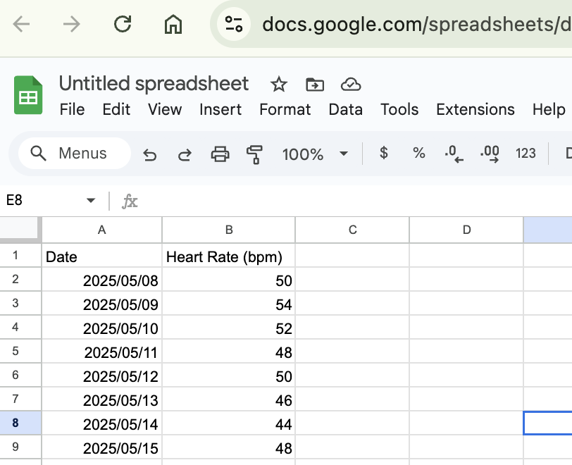
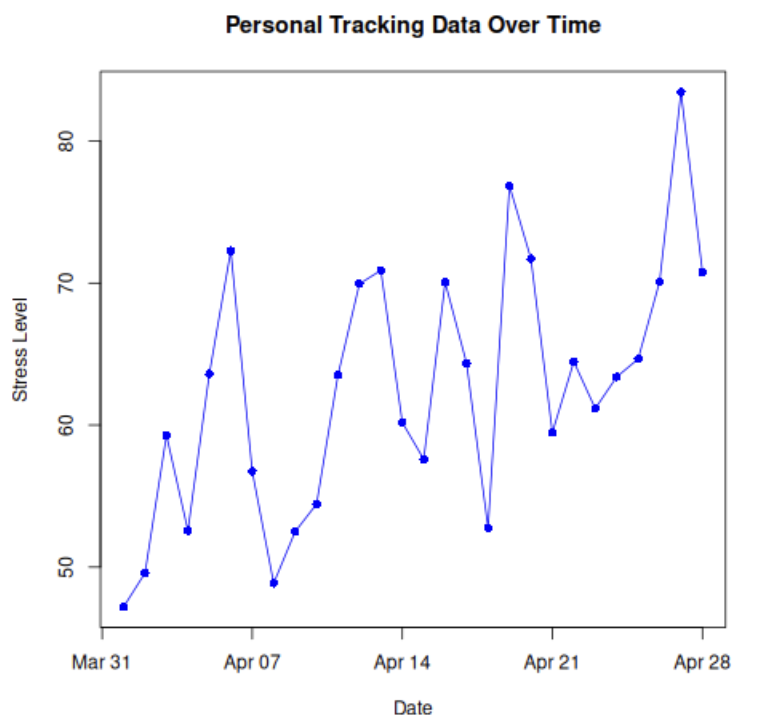

Section Project 1: Gleaning Insights from Personal Data
In this course-long mini-project, you’ll collect and analyze your own personal data to gain hands-on experience with data science concepts, and maybe learn something new about yourself!
For this project, you will:
- Select a personal data tracking topic (e.g., screen time, physical activity, study habits, spending, etc.)
- Design a data collection methodology and tracking system
- Consistently collect data over the course duration
- Periodically analyze the data using techniques learned in class
- Present insights and findings at the end of the course
Project milestones and check-ins will occur regularly throughout the course:
- Week 2: Topic brainstorm and selection
- Week 3: Design your tracking system and begin data collection
- Week 6: Initial data review and methodology refinement
- Week 9: Mid-project check-in and preliminary analysis
- Week 12: Final analysis and presentation preparation
Take a few minutes to brainstorm potential topics for your personal data tracking project. Consider:
- What aspects of your daily life are you curious about?
- What behaviors or patterns might you want to understand better?
- What data would be practical for you to collect consistently?
- What potential insights might be valuable to you?
List at least three potential tracking topics and briefly explain why each interests you.
Week 3: Designing your Data CollectionThe success of this project relies heavily on gathering the correct data. Think about what you are studying. For example, I’m interested to see if there are any trends in my perceived stress level each day. To measure this, I will need to ask myself how stressed I felt each day and write it down. I should do this at the same time, probably the end, of every day and make sure I record that level with the date. This is just the first step, I need a way to organize this data so that I can analyze it. In this section, you will need to think about how you would like to both collect and organize your data. Because I know I will want to work with my data, I will want to move it from the notepad (or note section on my phone) to maybe a Google sheet, like the one below:

Write a paragraph explaining how you plan to do this and submit it to your teacher.
Week 6: Initial Data ReviewTo make sure things are going well, you will analyze the personal data you’ve been tracking so far and be given the chance to refine your data collection or methodology, if needed.
Analysis steps include:
- Organize and clean your collected data
- Perform basic statistical analysis (e.g., averages, ranges, patterns)
- Create visualizations to illustrate key insights
- Identify limitations and potential biases in your data
- Draw preliminary conclusions based on your analysis
As I’ve been collecting data on my stress level, I run the code from our first check-in and notice an interesting pattern in my data, do you notice it?

Maybe you notice that it is trending upwards, but there is something deeper...
I’m noticing that my stress level seems to cycle up and down, why is that? This is why programming is so powerful in data analysis. If I run the following code, I might start to tease out some patterns about what days of the week my stress levels are higher or lower. What do you notice now?
Your mini-project presentation should include:
- A brief description of what data you collected and why
- Your data collection methodology
- Key findings from your analysis
- Visualizations to illustrate patterns or insights you’ve found
- Limitations of your data and analysis
- Potential next steps or questions for future investigation